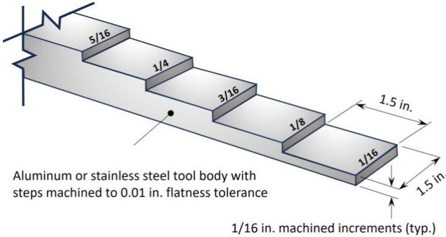
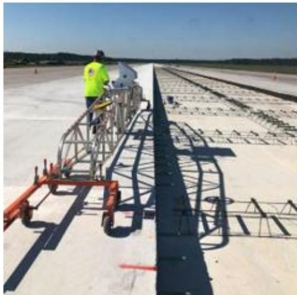
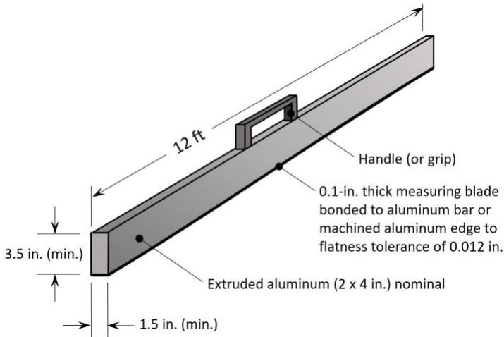
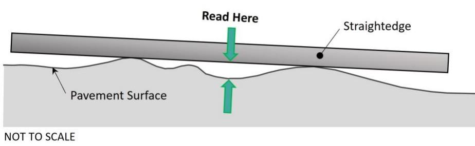
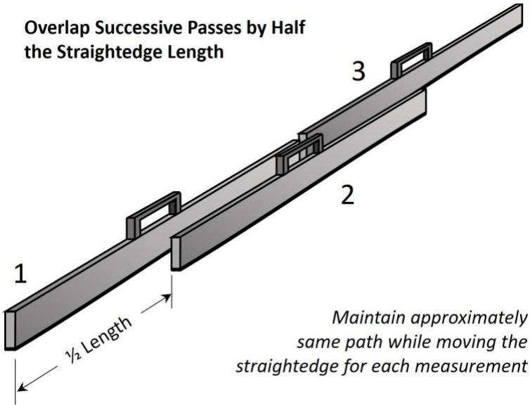
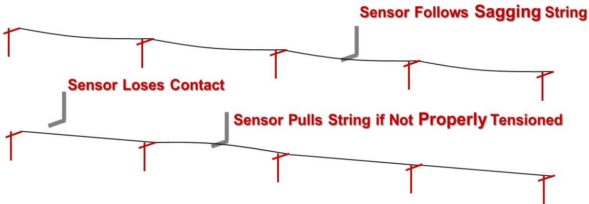
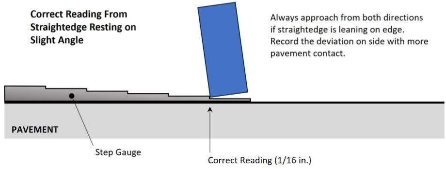
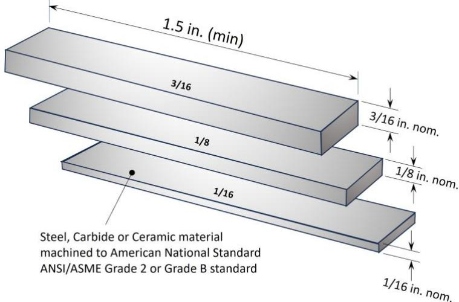

Pavement Surface Quality Measurement
Pavement Surface Quality Measurement is a quality‑control activity that verifies newly placed concrete runway, taxiway or apron slabs meet the geometric design tolerances for elevation, grade, longitudinal alignment, cross‑slope, sub‑base thickness and vertical edge conditions such as edge slump and joint‑face deviation [2][6]. It also assesses ride‑quality by monitoring smoothness expressed as an International Roughness Index (IRI) profile and by detecting equipment‑induced roughness sources through real‑time checks of machine‑control factors like the distance between the robotic total station and the paver [2][8]. The measurement is performed after the concrete can support walking, no later than 48 hours, using a calibrated 12‑ft straightedge (or approved equivalent) moved in overlapping passes over a prescribed 50‑ft grid while vertical deviations are read with step gauges or gauge blocks to the nearest 1/16 in [2][6]. Results—recorded by station, lane and lot and reported to the responsible party within ten days—drive immediate corrective actions when tolerances (e.g., ≤¼ in deviation, grade within +0/‑½ in) are exceeded, thereby ensuring proper drainage, structural integrity and long‑term pavement performance [2][6][8].
Sources (8)
Purpose and quality objectives
Pavement Surface Quality Measurement evaluates and controls the geometric performance of newly placed concrete pavement—including elevation/grade, longitudinal alignment (stringline offset), sub‑base thickness, surface evenness or flatness (trueness) and levelness—as well as vertical edge conditions such as edge‑slump and joint‑face deviations. It also assesses ride‑quality or smoothness, typically expressed with an International Roughness Index (IRI) profile, by monitoring machine‑control positioning factors (e.g., the distance between the robotic total station and the paver), continuity of concrete head, and hydraulic sensitivity of slipform leg barrels to keep the paving mold at grade. The measurement is performed with a 12‑ft straightedge (or approved equivalent) moved in overlapping passes over a prescribed grid, using calibrated step gauges or gauge blocks to quantify maximum vertical deviation, while random checks of stringline elevation/alignment and sub‑base thickness are taken at regular intervals. [2][6][8]
The following figure illustrates the step gauge used to quantify vertical deviations for pavement surface quality pass/fail qualification.

Step Gauge (in English Units) for pavement surface deviation pass/fail qualification. [2]The figure displays a stepped tool body machined from aluminum or stainless steel, featuring a series of precisely calibrated steps with thicknesses marked in fractions of an inch. This apparatus is used to measure vertical deviations against specification tolerances by placing it on the pavement surface alongside a straightedge. The gauge is manufactured with 1/16-in. increments to quantify maximum vertical deviation during quality control.
[2] — Ch. 5 (pp. 215–222), App. A (p. 375), App. H (pp. 491–513); [6] — 4. Pre-Paving (pp. 47–49), App. A (p. 89); [8] — Hydraulic Response (pp. 40–41), Stringless Controls (pp. 36–38)
“Pavement Surface Quality Measurement is performed to verify that the finished concrete runway or taxiway meets the geometric design tolerances required by FAA P‑501, UFGS 32‑13‑14.13 and DOD specifications for elevation, alignment, cross‑slope and surface smoothness.” The measurement also “ensures that the paved surface meets design‑specified elevation, alignment, grade and subbase uniformity requirements, thereby preventing ride‑quality defects, structural weaknesses, or directional deviations.” By targeting out‑of‑plane conditions—“such as edge slump, bulging, or low spots—that could lead to water ponding, hydroplaning, icing, or foreign‑object debris accumulation, all of which pose safety hazards to aircraft operations,” the inspection safeguards against water‑related hazards and FOD. In addition, “Pavement Surface Quality Measurement is intended to verify that the concrete slab meets the smoothness requirement” and does so by detecting equipment‑induced roughness sources: “excessive distance between the robotic total station and the paver, line‑of‑sight obstructions, high winds moving the equipment, 3D system errors, or loss of concrete head in the grout box.” Real‑time monitoring enables crews to “adjust the sensitivity settings—higher for smooth tracks and lower for rough tracks—to achieve the required surface smoothness before the pavement is placed,” ensuring compliance with IRI‑based smoothness specifications. Collectively, these checks confirm that the pavement surface remains true to design geometry, free of low or high spots, maintains proper drainage, supports structural integrity, and provides a safe, comfortable riding surface. [2][6][8]
The following figure illustrates common equipment used for these measurements.

Equipment used for pavement surface quality measurement and real-time smoothness monitoring. [2]The image displays a worker operating a large, wheeled metal frame on a concrete runway, which corresponds to the straightedge or profiler equipment mentioned in the caption.
[2] — Ch. 5 (pp. 215–222), App. A (p. 375), App. H (pp. 491–513); [6] — 4. Pre-Paving (pp. 47–49), App. A (p. 89); [8] — Hydraulic Response (pp. 40–41), Stringless Controls (pp. 36–38)
Scope and applicability
The procedure is applicable to Portland‑cement concrete pavements—including runways, taxiways, aprons, and any overlay projects—constructed under FAA P‑501 or DoD UFGS 32 13 14.13 specifications and placed with slipform or other automated pavers. It also covers the underlying base layers such as fine‑graded compacted unbound bases, cement‑treated or lean concrete bases, and asphalt‑stabilized base courses. Both stringline and stringless paving operations are included; the method requires staking of reference hubs, establishment and protection of strings or control points, and verification of horizontal alignment, cross‑slope and elevation during slab placement. When 3‑D machine‑control systems are used, the measurement is performed before paving by calculating the IRI of the 3‑D model to identify potential smoothness problems. Surface‑smoothness checks are required on all pavement components that affect aircraft safety—longitudinal and transverse slab faces, edges within 18 inches of a free edge, and transverse construction (header) joints—using a 12‑foot straightedge (or approved equivalent). Measurements must be taken after the concrete can support walking, no later than 48 hours after placement, and are part of the final surface inspection. Stricter tolerance limits apply to sections located within 200 ft of an aircraft arresting gear, where DoD requirements dominate. The procedure remains applicable under field conditions that may affect the control system, such as line‑of‑sight obstructions, excessive dust or fog, high winds, and large distances between the robotic total station and the paver. Grade changes, cross‑slope transitions, crowns, drainage structures, and similar pavement penetrations are excluded. [2][8]
The following figure illustrates the straightedge standard dimensions and other requirements used for these measurements.

Straightedge standard dimensions and other requirements. [2]The figure displays a 12-foot extruded aluminum straightedge equipped with a handle, which is the primary tool used to verify geometric design tolerances for newly placed concrete pavements. Visual annotations indicate minimum cross-sectional dimensions for the straightedge to ensure it rests stably on edge without tipping over during measurements.
[2] — Ch. 5 (pp. 215–222), App. A (p. 375), App. H (pp. 491–513); [8] — Stringless Controls (pp. 36–38)
Across the guides, pavement surface quality measurement is required as a mandatory QC activity when the contract references FAA P‑501 or UFGS 32‑13‑14.13; contractors must perform daily straightedge checks for each lot within 48 h after the concrete can support walking, using a 12‑ft straightedge on a 50‑ft grid (half‑length intervals) and record results to the nearest 1/8–1/16 in., with random rover‑prism spot checks of paving hubs and stringline elevation limited to stringless sections. In the pre‑paving phase, some guides treat the measurement as an optional random quality‑control survey in which inspectors randomly check stringline elevation and alignment against paving‑hub information; the test is omitted when the string has been eyeball adjusted for smoothness, rendering it inappropriate in that circumstance. Straightedge testing is explicitly prohibited on eyeball‑adjusted strings, grade changes, cross‑slope transitions, junctions between new and existing pavement, crowns, drainage structures or other penetrations, and on long horizontal runs where non‑contact laser profiling is more suitable; rover‑based checks are likewise limited to stringless sections. Limitations include a required grade tolerance of +0 in to –½ in at each grid node, pass/fail straightedge tolerances tied to payment adjustments, the inability of a 12‑ft straightedge to detect grade changes smaller than 0.2 %, and the need for formal Resident Project Representative approval before using alternative devices such as rolling inclinometers or simulated straightedges. [2][6]
[2] — Ch. 5 (pp. 215–222), App. H (pp. 491–511); [6] — 4. Pre-Paving (p. 47)
Test methods and procedures
Standardized pavement‑surface quality measurement follows FAA P‑501 and UFGS 32 13 14.13 hand‑straightedge test. The QC crew first verifies base cross‑slope and elevation with survey equipment (total station, stringline, level or laser). “the grade should be verified by survey to be within +0 and -1/2 inch of the specified grade at the nodes of the grid.” After concrete has hardened enough to walk on it and no later than 48 hours, a calibrated 12‑ft straightedge is used. “Place the straightedge on the pavement along the desired line for measurement and supported only by its own weight.” The tool is positioned both parallel and perpendicular to the runway centreline; “Apply a 12-foot straightedge parallel and perpendicular to the centerline, moving it continuously at half-length intervals over the 50 ft grid for the surface smoothness tolerance.” Overlaps of at least six feet (FAA) or two feet (UFGS) are required between successive passes. Transverse checks are made every 15 ft across the width. The greatest vertical deviation beneath the straightedge is located and measured with a step gauge or gauge blocks to the nearest 1/8 in (field tolerance) or 1/16 in (2 mm) as specified; “Report any deviation to the nearest 1/8 in.” Each measurement records station position, lane number, lot, deviation magnitude and length, and is marked pass/fail. Deviations exceeding the limit (e.g., >¼ in for ponding potential) are reported immediately and all results submitted within ten days. Where approved, a rolling inclinometer meeting ASTM E2133 may be used as an alternative; UFGS does not permit alternatives. [2]
The proper technique for measuring these deviations is illustrated in the following figure.

Proper technique for measuring pavement surface deviations from straightedge. [2]The figure illustrates the correct placement of a straightedge on an uneven pavement surface, showing it supported only by its own weight at two high points rather than resting flat. It indicates that the measurement should be taken at the largest vertical deviation between the straightedge and the pavement surface, which corresponds to the gap shown in the center of the tool.
[2] — Ch. 5 (p. 215), App. H (pp. 491–511)
Valid pavement surface quality measurements require calibrated equipment, qualified operators, and controlled environmental conditions. Calibration is achieved by using an accurate step gauge or gauge block that matches the units of the tolerance specifications, and by following the system manufacturer’s calibration procedures for total‑station/3D machine‑control components. Operators must be skilled and specifically trained in the proper use of straightedge tools and in interpreting specification tolerances; they also must adhere to the manufacturer’s operating procedures for the 3D control system. Environmental controls include maintaining an unobstructed line‑of‑sight between the robotic total station and the paver prism, keeping the distance within the recommended range, avoiding obstructions such as equipment, direct sunlight, fog, mist or dust, limiting wind that could move either instrument, and ensuring all hardware, software, radio, wiring and batteries are functioning correctly. [2][8]
The figure below illustrates the proper method for reading and assessing pass or fail results when using a step gauge in English units.
 Visual guide for assessing pavement surface quality pass/fail criteria using a step gauge. [2]
Visual guide for assessing pavement surface quality pass/fail criteria using a step gauge. [2]
The figure displays two horizontal bar charts representing tolerance zones, where red areas indicate ‘FAIL’ and green areas indicate ‘PASS’. A light green section labeled ‘Field Measurement Tolerance’ is shown within the pass/fail bands to account for minor surface texture variations. A stepped profile below the charts illustrates specific deviation heights, demonstrating how vertical deviations are read with step gauges to verify geometric design tolerances.
[2] — App. H (pp. 494–502); [8] — Stringless Controls (pp. 36–38)
Sampling and testing frequency
The guides require establishing a systematic sampling network that “use a 50 ft grid” along each paving lot. At each node the grade is surveyed (“grade should be verified by survey to be within +0 and -1/2 inch of the specified grade at the nodes of the grid”) and a 12‑ft straightedge is run parallel and perpendicular to the centerline, moving it continuously at half‑length intervals over the grid for smoothness tolerance. Cross‑section coverage is achieved by “Measure, log and analyze grade tolerance at 50’ intervals (3 to 5 places across the width of the roadway)”, with additional longitudinal lines dictated by lane geometry (mid‑point or third‑point per FAA P‑501; eighth‑point from each side and centerline per UFGS 32 13 14.13). Transverse checks are performed “every 15 ft.” The number of straight‑edge paths is tied to the number of paving lanes, slab width and depth, so that “Depending upon the paving segment length and width, as well as the measurement frequency, there may be hundreds of individual measurements even for smaller paving segments.” Testing is conducted daily on all permissible areas; results are reported each day (“Results of the assessment must be provided to the RPR daily”, “the contractor conducts the QC straightedge testing daily”). Measurements exclude grade changes, cross‑slope transitions, crowns, drainage structures and other penetrations. In addition to the regular grid, random hub checks are interspersed: a “Random check of paving hub elevation – 1 per 1,000’” and other “Random survey check of paving hubs.” Random checks also verify stringline elevation and lateral offset using a rover with handheld prism; any out‑of‑tolerance finding triggers a “Re-survey and reset stringline where errors are identified.” [2][6]
The following figure illustrates the proper overlapping of successive passes of the straightedge during these daily smoothness tolerance checks.

Illustration of the proper technique for overlapping successive passes with a straightedge. [2]The figure depicts three sequential positions (labeled 1, 2, and 3) of a long straightedge tool being moved along a surface to measure smoothness. It visually demonstrates the instruction to overlap successive passes by half the straightedge length while maintaining approximately the same path for each measurement.
[2] — Ch. 5 (pp. 215–222), App. H (pp. 496–511); [6] — 4. Pre-Paving (pp. 47–49), App. A (p. 89)
The guides require that measurement frequency and locations be set by the size of the pavement and lot boundaries: “Determine frequency and locations (paths or positions) for measurement based on the pavement/placement dimensions, lot/sublot areas and surrounding pavement structures.” A systematic grid is then established, typically a “Use a 50 ft grid” with a 12‑foot straightedge applied “Apply a 12-foot straightedge parallel and perpendicular to the centerline, moving it continuously at half-length intervals over the 50 ft grid for the surface smoothness tolerance.” Control points (paving hubs or pins) are placed at regular spacing – “Stringline systems require paving hubs (or pins) typically placed 25 ft apart” – with the exact number of measurement paths determined by lane count, slab width and depth: “The location and number of measurement paths is based on the number of paving lanes, and slab width and depth.” Longitudinal lines follow code‑specified positions such as “FAA P-501 requires testing at the mid-point or third points of the lane depending on paving lane width” and “UFGS 32 13 14.13 requires testing along longitudinal lines at the eighth point in from each side of the lane and at the centerline of the paving lane.” Transverse checks are performed at regular intervals: “Check transverse measurements every 15 ft.” To capture variability beyond the deterministic grid, a stochastic component is added: “Random survey check of paving hubs.” and a more sparse elevation verification – “Random check of paving hub elevation – 1 per 1,000’”. Grade tolerance is also sampled across the width at each 50‑ft station: “Measure, log and analyze grade tolerance at 50’ intervals (3 to 5 places across the width of the roadway) – correct highs and lows.” Sub‑base thickness is checked similarly: “Check subbase thickness at 50’ intervals in three locations across the width of the layer.” All readings are logged with precise context: “For each measurement record the position (in stations), lane number and lot.” Any out‑of‑tolerance result triggers a corrective action: “Re-survey and reset stringline where errors are identified.” This combined systematic‑grid, regular‑hub, random‑check approach ensures that the sampled measurements represent the material, construction process, lot, and completed pavement. [2][6]
The following figure illustrates the surveyed reference hub and stringline setup used to establish these measurement locations.
 Surveyed Reference Hub and Stringline [6]
Surveyed Reference Hub and Stringline [6]
The image displays a wooden survey stake driven into the gravel sub-base, marked with handwritten stationing information. A metal stringline is attached to the top of the stake and extends horizontally across the construction site. This setup represents a surveyed reference hub used for alignment, where the stringline controls the steering and elevation of fine grade trimmers and pavers to ensure proper pavement thickness and smoothness.
[2] — Ch. 5 (pp. 215–222), App. H (pp. 501–511); [6] — 4. Pre-Paving (pp. 47–49), App. A (p. 89)
Acceptance criteria and tolerances
The guides require that the design grade at each grid node be confirmed by survey to lie within +0 in and –½ in of the specified elevation (‘grade should be verified by survey to be within +0 and -1/2 inch of the specified grade at the nodes of the grid’). A 12‑ft aluminum straightedge (minimum 1.5 in wide, 3.5 in high) is run continuously parallel and perpendicular to the runway centreline over each 50‑ft grid (‘Apply a 12-foot straightedge parallel and perpendicular to the centerline, moving it continuously at half-length intervals over the 50 ft grid for the surface smoothness tolerance’); any vertical deviation measured between pavement surface and the straightedge must stay within the allowable smoothness range. Visual inspection of bumps, dips, offsets or edge slump is limited to roughly three‑eighths to one‑half inch (‘Typically, the highest (or lowest) surface deviations are less than 3/8 to ½ inch’), and a work item is rejected when a measured deviation exceeds a quarter‑inch (6 mm) (‘deviation is greater than 1/4 in. (6 mm)’). Field‑test measurement devices must provide at least 1⁄16‑in (2 mm) resolution (‘The 1/16-in. (2-mm) field test measurement tolerance also applies’), with step gauges fabricated to include 1⁄16‑in increments and a width tolerance of ±0.05 in (‘Step gauges manufactured to English units shall include steps of 1/16-in. thickness to measure deviations up to at least 1/2 in.’; ‘The gauge shall be 1.5 in. wide with a manufacturing width tolerance of plus or minus 0.05 in.’).
Transverse elevation checks are required every 15 ft (‘Check transverse measurements every 15 ft.’) and all reported deviations must be rounded to the nearest 1⁄8 in (‘Report any deviation to the nearest 1/8 in.’). Longitudinal measurements are taken continuously at a distance of 1 in from the lane edge, and vertical‑curve grade changes may not exceed half an inch over 25 ft (0.2 %) (‘maximum rate of change for vertical curve transitions is based upon ½ inch in 25 feet or 0.2%’).
In addition to these dimensional limits, a statistical sampling rule applies: one random check of the paving hub elevation must be performed for every thousand units inspected (‘Random check of paving hub elevation – 1 per 1,000’). If an error is found during that sample, the stringline is re‑surveyed and reset as corrective action (‘Re-survey and reset stringline where errors are identified’).
Any measurement that falls outside the stated tolerances or any failure to meet the sampling requirement is considered non‑conforming and must be reported for correction. [2][6]
[2] — Ch. 5 (p. 215), App. H (pp. 493–510); [6] — App. A (p. 89)
Quality control and process monitoring
The guides require continuous monitoring of a defined set of characteristics throughout production and construction to keep the pavement surface true to design. The base cross‑slope and elevation are checked with survey equipment, stringlines, levels or laser levels (“The QC function must check the cross‑slope and elevations of the base using survey equipment…”). Paving‑hub elevations are verified by random survey checks (one per 1 000 units) and compared to recorded hub data (“Random survey check of paving hubs.”). The position and alignment of the stringline are tracked daily; a checklist completed each day ensures staking is accurate, and any deviation triggers an immediate re‑survey and reset (“Checklist items to be completed daily by the stringline foreman”, “Re‑survey and reset stringline where errors are identified”). Grade tolerance is measured, logged and analyzed at 50‑ft intervals across the roadway width (three to five readings per cross‑section) so that high or low spots can be corrected (“Measure, log and analyze grade tolerance at 50’ intervals… – correct highs and lows.”). Sub‑base thickness is also checked at the same spacing in three transverse locations (“Check subbase thickness at 50’ intervals in three locations across the width of the layer.”).
Surface evenness is monitored with a calibrated straightedge. The procedure calls for applying a 12‑foot straightedge parallel and perpendicular to the centerline, moving it continuously at half‑length intervals over the 50 ft grid (“Apply a 12‑foot straightedge …”). Transverse elevation deviations are recorded every 15 ft, and the maximum vertical deviation between the two highest peaks is measured in both longitudinal and transverse directions. Deviations greater than the field tolerance (e.g., ≤ 3⁄8–½ in, surface deviation > 1/16 in) trigger corrective action (“the grade should be verified by survey to be within +0 and -1/2 inch…”, “The 1/16‑in. (2‑mm) field test measurement tolerance also applies”). Edge slump along free longitudinal edges is measured, as are vertical joint‑face alignment and trueness to a true vertical plane (“Edge slump measurement along longitudinal paving lane edges (free edges in construction segments).”, “Vertical joint face measurements for edge slump, bulging and trueness to a vertical plane at free edges…”). Low‑lying areas that could collect water or debris are identified and corrected (“The purpose of a well‑controlled pavement surface is to help prevent the accumulation of water in low areas”).
Geometric integrity of the 3‑D control system is continuously watched. The distance between the robotic total station and the paver, line‑of‑sight obstructions (equipment, sunlight, fog, dust), wind‑induced movement of the station or prism, and any hardware/software faults in radio, wiring or batteries are monitored (“Distance between the robotic total station and the paver.”; “Line of sight issues …”; “High winds causing movement …”; “3D system errors (radio, software, hardware, wiring, batteries, etc.)”). Paver speed is kept steady and concrete head in the grout box is maintained uniform by controlling spacing to the spreader and ensuring rapid communication when head changes occur.
All measurements are logged with station, lane and lot identifiers; deviations are reported to the nearest required unit (1/16 in or 2 mm) and corrective actions are taken promptly. [2][6][8]
[2] — Ch. 5 (pp. 215–222), App. A (p. 375), App. H (pp. 491–513); [6] — 4. Pre-Paving (pp. 47–49), App. A (p. 89); [8] — Stringless Controls (pp. 36–38)
The guides require that any measured condition falling outside defined tolerances initiates process adjustments or additional testing. Grade verification must stay within “grade should be verified by survey to be within +0 and -1/2 inch of the specified grade at the nodes of the grid”; when high or low values are observed at the prescribed 50‑ft intervals across three to five points of width, they must be corrected (“Measure, log and analyze grade tolerance at 50’ intervals (3 to 5 places across the width of the roadway) – correct highs and lows.”). Subbase thickness measured at the same spacing in three transverse locations that “fall outside the acceptable limits” also triggers corrective action (“Check subbase thickness at 50’ intervals in three locations across the width of the layer.”). Straightedge testing is a pass/fail check (“Presently, FAA applies the straightedge as a pass/fail test”); any deviation reported to the nearest 1/8 in that exceeds the “deviation is greater than 1/4 in. (6 mm)” limit or approaches the “The 1/16‑in. (2‑mm) field test measurement tolerance also applies” must be corrected and may require re‑surveying. Repeated deviations at multiple transverse or longitudinal stations, a “chronic occurrence of deviations”, vertical‑edge bulging (“significant bulging or deformations in a slab’s vertical edge may indicate problems with the contractor’s material and process control”), slump, or joint rocking (“If the straightedge can rock back and forth across the joint, the joint is too low and must be raised.”; “If, alternatively, a gap is visible between the joint and the straightedge, the joint is too high and must be lowered.”) are indicators of loss of material or process control and demand additional profiling, re‑survey, or review of paving operations. Errors that affect grades or alignment—including “Loss of radio signal” or movement detected by “Eyeballing a stringline …”—require immediate re‑staking and resetting of the stringline (“Re‑survey and reset stringline where errors are identified”). Real‑time smoothness monitoring also provides triggers: rising IRI values, loss of concrete head in the grout box (“Running out of concrete in the paver (i.e., losing all concrete head in the grout box) will result in pavement roughness … Process adjustments must be made to prevent this from occurring.”), or any of the following conditions—“Distance between the robotic total station and the paver”, “Line of sight issues …”, “High winds causing movement …”—must prompt process adjustments and verification testing. When roughness is detected, sensitivity settings for the leg‑barrel should be modified (“The optimal sensitivity settings for a given project should be related to the relative smoothness of the paver track line”) and the improvement verified. [2][6][8]
The following figure illustrates sensor control issues that can arise during stringline paving operations.

Sensor control issues with stringline paving (ACPA 2013). [2]The figure illustrates three specific mechanical interactions between a sensor and a guide string: the sensor following a sagging string, the sensor losing contact due to a gap in the line, and the sensor pulling the string when it is not properly tensioned. These deviations are caused by loss of sensor contact, bumps created by sensors catching on knots or splices, and excess crew fidgeting with controls. Proper setup is critical to prevent these deviations and maintain grade elevation within tolerances.
[2] — Ch. 5 (pp. 215–221), App. H (pp. 491–511); [6] — 4. Pre-Paving (p. 49), App. A (p. 89); [8] — Hydraulic Response (pp. 40–41), Stringless Controls (pp. 36–38)
Nonconformance and corrective action
When inspection or testing shows that pavement grade, alignment, joint elevation or subbase thickness falls outside the allowable tolerances, the contractor must take immediate corrective action. The deficiency is corrected on the spot while the concrete is still plastic: low joints are raised, high joints are lowered, and a 12‑ to 16‑ft cutting straightedge is run across the surface so that minor deviations can be corrected. Any vertical deviation greater than ¼ in. (6 mm) in either transverse or longitudinal direction requires correction before acceptance; a 1/16‑in. field‑test tolerance applies to normal macrotexture variations. Grade measurements and subbase thickness are measured, logged and analyzed at 50‑ft intervals (3–5 locations across the width); any high or low spots identified must be corrected. When paving hub elevation or stringline alignment is out of tolerance, a re‑survey and reset of the stringline is performed before further paving can proceed. All deviations are recorded to the nearest 1/8 in., including station location, and the non‑conforming result is promptly reported to the paving foreman and concrete plant operator. The contractor must remove and replace any non‑conforming concrete and bear all associated costs regardless of who caused the error. [2][6]
[2] — Ch. 5 (pp. 216–221), App. H (pp. 494–510); [6] — 4. Pre-Paving (p. 49), App. A (p. 89)
Documentation and reporting
The pavement surface quality measurement record shall capture cross‑slope and elevation data obtained with survey equipment, stringlines, levels or laser levels, and it must include the results of straightedge smoothness checks. The guides require that a “12-foot straightedge parallel and perpendicular to the centerline, [be] moving it continuously at half-length intervals over the 50 ft grid for the surface smoothness tolerance” and that each placement be logged with its station position, lane number and lot. For every measurement the location (by stationing) and deviation must be recorded, always noting “the low side of the straightedge (lower reading) for the location,” and the deviation is to be rounded to the nearest 1/16‑inch (2 mm) and reported to the nearest 1/8‑in. Each entry is marked pass/fail and includes the length of the deviation. Grade verification is required at each grid node, with “grade should be verified by survey to be within +0 and -1/2 inch of the specified grade at the nodes of the grid.” Any deviation greater than 1/4 in (6 mm) triggers corrective action such as grinding or surface correction, and all out‑of‑tolerance findings are forwarded to the paving foreman and concrete plant operator for immediate remediation. The record must also contain pre‑paving inspection items, including a “Random check of paving hub elevation – 1 per 1,000” and a daily checklist completed by the stringline foreman and submitted to the QC manager before work begins. When errors are identified, the corrective action is documented as a “Re‑survey and reset stringline where errors are identified.” Daily results are provided to the responsible party, and the complete set of straightedge measurements with all identifiers must be submitted within ten days as the required QA/QC certification. [2][6]
The following figure illustrates the correct procedure for recording deviations when a straightedge rests on a slight angle.

Correct procedure and recording of deviations when straightedge rests on slight angle. [2]The figure illustrates the correct method for reading pavement surface quality using a straightedge resting at a slight angle, showing how to identify the gap between the tool and the concrete.
[2] — Ch. 5 (p. 215), App. H (pp. 502–511); [6] — App. A (p. 89)
The QC crew documents base‑surface elevation and smoothness by surveying the cross‑slope and grade on a 50 ft grid, using a 12‑foot straightedge moved at half‑length intervals and confirming that the surveyed grade at each node falls between zero and minus one‑half inch of the design value. Quality records shall list each straight‑edge measurement point with its stationing and the measured deviation rounded to the nearest 1/8 in; transverse checks are made at 15‑ft intervals while edge‑slump and vertical‑face checks are taken continuously along the lane edges. All measured values are compared to the FAA tolerances for thickness and smoothness, and the determination of whether the finished concrete will meet the allowable thickness is recorded. Any reading that exceeds the tolerances in Table 1 is flagged and immediately reported to the paving foreman and concrete plant operator for corrective action, and all out‑of‑tolerance values are retained in the record as evidence of non‑conformance. The daily results are provided to the Responsible Project Representative (RPR) for formal review; the compiled set of location‑deviation pairs is then evaluated against FAA P‑501 and UFGS 32 13 14.13 to decide acceptance of the pavement surface. After acceptance, the complete data package is submitted to the government within ten days of collection, establishing a performance baseline that supports future monitoring, trend analysis, and feedback for ongoing quality improvement. [2]
The following figure illustrates the constraints associated with base and pavement surface elevation tolerances.
 Constraints associated with base and pavement surface elevation tolerances. [2]
Constraints associated with base and pavement surface elevation tolerances. [2]
The figure illustrates the vertical stacking of pavement layers, specifically showing the Subgrade, Base, and Concrete Pavement. It depicts Plan Grade Tolerances for each layer as a ±½ inch range relative to the design grade line. The diagram demonstrates how compounding these individual layer tolerances can result in a total thickness deviation that exceeds the specified Thickness Tolerance of ≤ ½ inch, even if every individual plan grade is within its own limit.
[2] — Ch. 5 (p. 215), App. H (pp. 502–511)
Relationship to long-term performance
The guides state that surface‑quality measurements—whether obtained with a straightedge survey or derived from a pre‑pave 3‑D model IRI—serve as direct indicators of future pavement durability. Measured deviations such as bumps, dips, offsets, edge slump, or any vertical departure exceeding the accepted limits signal locations where water can pond and stress concentrations develop, which accelerates moisture‑related cracking, spalling, or loss of slab edge thickness and therefore shortens service life. Likewise, an IRI value that exceeds the target smoothness threshold is linked to localized durability problems that can reduce the pavement’s service life. Consequently, when inspections record a straightedge deviation greater than ¼ inch (6 mm) or detect a field‑test tolerance breach of 1/16 inch (2 mm), corrective actions such as grinding, resurfacing, or re‑paving are required to restore compliance and preserve distress resistance. Similarly, the guidelines require monitoring of factors that affect smoothness—total‑station distance, line‑of‑sight obstructions, wind‑induced movement, 3‑D system errors, and continuous concrete head—to keep the IRI within limits, thereby enhancing long‑term performance. [2][8]
The following figure illustrates common deviations in pavement surfaces that contribute to these durability issues.
 Illustration of pavement surface deviations including bumps, dips, edge slump variations, and abrupt offsets. [2]
Illustration of pavement surface deviations including bumps, dips, edge slump variations, and abrupt offsets. [2]
The figure displays a schematic diagram illustrating various geometric irregularities in concrete pavement surfaces, specifically identifying ‘Dip (Depression)’ as a depression on the slab and ‘Bump’ as an upward protrusion. It details ‘Edge Slump’ by showing three distinct cross-sectional profiles where the vertical edge of the pavement slumps down at the top, slumps out at the bottom, or bulges out in the middle.
[2] — App. H (pp. 493–510); [8] — Stringless Controls (pp. 36–38)
After the concrete has cured enough to permit walking, a follow‑up smoothness inspection with a straightedge is required in both transverse and longitudinal directions; each reading is logged as pass/fail with the deviation rounded to the nearest 1/16 in. (or 2 mm) and the length of the deviation noted. This post‑construction testing must be completed no later than 48 hours after placement, and all lot‑level measurements—including lane and station identifiers—must be submitted to the government within ten days, creating a rapid feedback loop for any needed corrective actions. [2]
The following figure illustrates the typical gauge blocks used to determine whether pavement surface deviations meet the required pass or fail criteria.

Typical gauge blocks (in English Units) for pavement surface deviation pass/fail qualification. [2]The figure displays three rectangular gauge blocks of varying thicknesses, labeled with fractional inch dimensions and nominal height specifications. These blocks are manufactured to American National Standard ANSI/ASME Grade 2 or Grade B standard, which provides the necessary accuracy for pavement straightedge testing applications. The minimum length of the gauge block is specified as 1.5 inches, ensuring it fits completely underneath the testing straightedge.
[2] — App. H (pp. 510–511)
References
- Best Practices Manual: Quality Control and Quality Acceptance of Concrete Airport Pavement ·
ACPTP-2022-4_QC_QA_of_concrete_airfield_pvmt_manual_w_cvr_508 - Field Reference Manual for Quality Concrete Pavements ·
hif13059 - Implementation of Best Practices for Concrete Pavements:Guidelines for Specifying and Achieving Smooth ConcretePavements ·
smooth_concrete_pvmt_guidelines_w_cvr
References
- Integrated Materials and Construction Practices for Concrete Pavement: A State-of-the-Practice Manual (2nd edition IMCP Manual, 2019) [link]
- Best Practices Manual: Quality Control and Quality Acceptance of Concrete Airport Pavement [link]
- Implementation Manual: 3D Engineered Models for Highway Construction—The Iowa Experience (2015–Manual) [link]
- Quality Control for Concrete Paving: A Tool for Agency and Industry (Optimized for fast web viewing–2021) [link]
- Guide to Concrete Overlays (4th Edition–Optimized for fast web viewing–2021) [link]
- Field Reference Manual for Quality Concrete Pavements (2012) [link]
- Guide for the Development of Concrete Overlay Construction Documents (2018) [link]
- Implementation of Best Practices for Concrete Pavements: Guidelines for Specifying and Achieving Smooth Concrete Pavements (2019) [link]